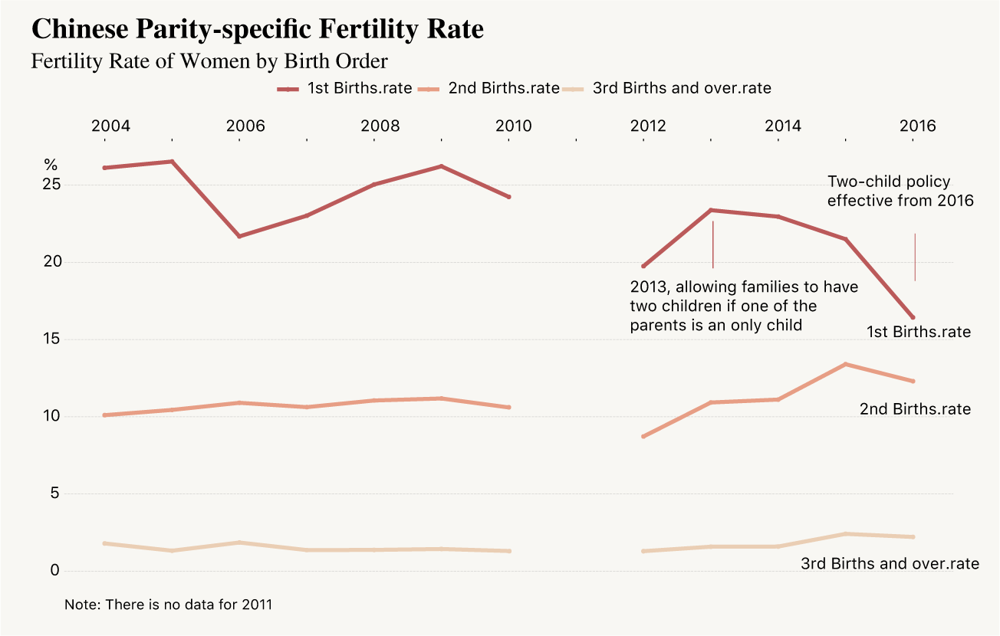
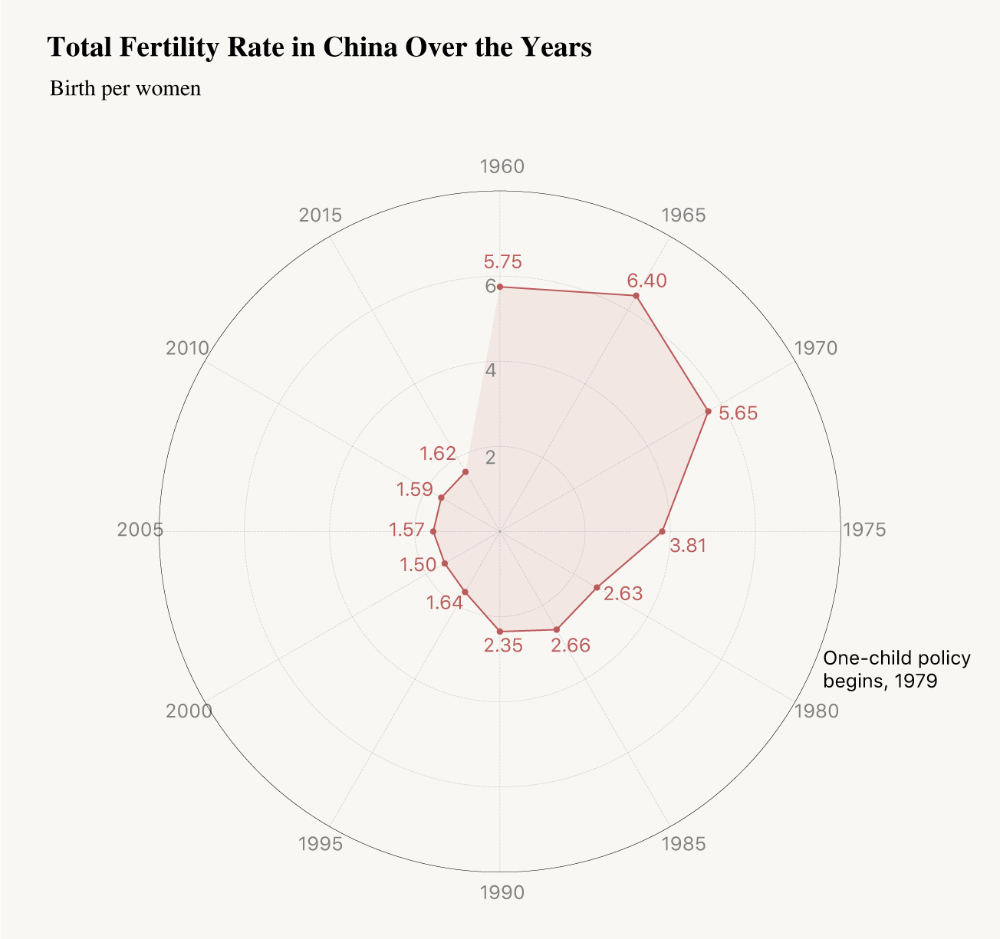
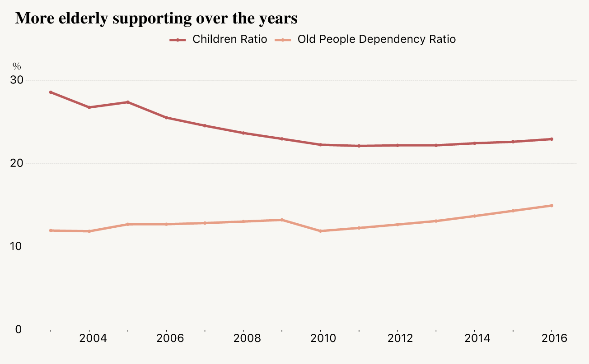

BY Sirui Zhu
Published on 3th August
Chinese Two-child policy is a hot topic, since 2013, Chinese government relived the one-child policy which has been implemented for over 30 years. The first step is allowing a second child for family with one of parents are single child.
This was followed by a complete two-child policy begin in the start of 2016, no matter of their parents condition, families can have two children.
It’s a policy to boom and encourage more young people and population. Since 1979, chinese goverment restricted one-child policy, there is an effect on population. However, in recently years, we also hear that China is suffering population risk. It seems not many people as expected Having second child. What’s the matter?
Please Have Another Baby
The parity-specific fertility rate for 1st child is decline, not to mention second child births rate. The data from National Bureau of Statistics of China shows that 1st Births rate is declined since 2013.
Parity-specific Fertility Rate
Actually after the two-child policy implemented, the 1st child fertility rate is declined. Although we can see an increase for second births rate from 2013 onwards, but after 2015, there is a decline as well.
NOTE: There is no data for 2011
SOURCE: National Bureau of Statistics of China
Most people think that it is too much pressure to support a child in the city.
Parity-specific Fertility Rate
Let’s look at total fertility rate in China over the years.
We can see that the total fertility rate which means birth per women, shrinked a lot over past 50 years, lower than the world average total fertility rate of 2.44(in 2016).

SOURCE: The World Bank
Aging era is coming
People in 25s and 30s have more pressure dealing with children and supporting old people.
We can see that over the past 12 years, the old people depenfency radio has increased while children radio declined, with a steady and slow increase trend.

SOURCE: National Bureau of Statistics of China
In this case, it could be difficult to persuade Chinese couples to have more children. High living costs, long work hours and surging child-care expenses mean that many couples feel that they can only afford to have one child — or none.